ОСНОВНЫЕ ПРИНЦИПЫ РАБОТЫ С ПЛАТФОРМОЙ
Запустите учебную версию 1С:Предприятия. Перед вами появится окно запуска.
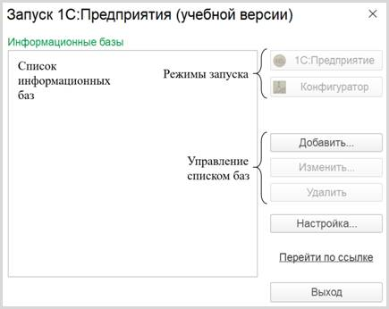
Добавим новую информационную базу. Для этого нужно нажать на кнопку «Добавить».
Откроется окно добавления информационной базы/группы. Выберите вариант создания новой информационной базы и нажмите на кнопку «Далее».
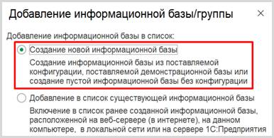
На следующем этапе можно создать новую информационную базу из заготовки (шаблона) или совершенно пустую.
Для выполнения лабораторных работ нам понадобятся только пустые информационные базы.
Выберите нужный пункт и нажмите на кнопку «Далее».
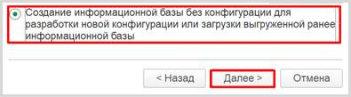
Дайте имя вашей информационной базе и нажмите кнопку «Далее».
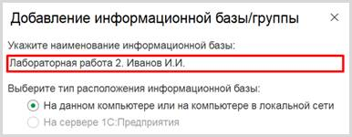
При необходимости можно изменить каталог для установки информационной базы. Нажмите на кнопку «Далее».
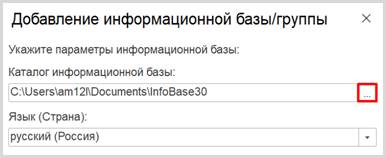
В последнем окне оставьте все настройки по умолчанию и нажмите на кнопку «Готово».
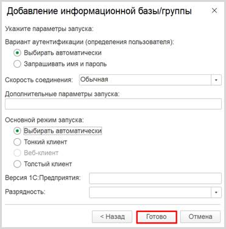
В списке информационных баз появится созданная вами информационная база.
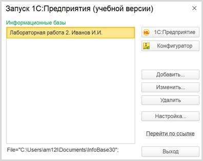
Любая информационная база может быть запущена в двух режимах: «1С:Предприятие» и «Конфигуратор».
Определение
Режим «1С:Предприятие» — это пользовательский режим. В этом режиме пользователи добавляют, изменяют, удаляют данные, формируют отчеты и выполняют другие прикладные задачи.
Режим «Конфигуратор» — это режим для разработчика. В этом режиме разрабатываются прикладные решения и выполняется администрирование информационных баз.
Для начала запустим созданную информационную базу в режиме «1С:Предприятие». Для этого выберите свою базу в списке баз и нажмите на кнопку «1С:Предприятие».
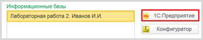
Запустится окно режима «1С:Предприятие». Система автоматически сформирует для пользователя форму, а также добавит некоторые дополнительные функции, например, калькулятор и календарь. Их можно вызвать при нажатии на кнопку, выделенную рамкой.
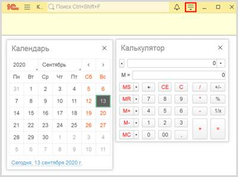
Закроем пользовательский режим с помощью «крестика» в правом верхнем углу.
Откроем систему «1С:Предприятие» заново. На этот раз запустим информационную базу в режиме «Конфигуратор».
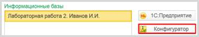
Откроется режим для разработчика. Здесь и будет производиться конфигурация (настройка) информационных баз.
Для разработки информационных баз нам понадобятся специальные объекты. Чтобы их включить, необходимо выбрать пункт меню «Конфигурация» à «Открыть конфигурацию».
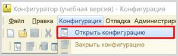
Откроется окно
конфигурации.
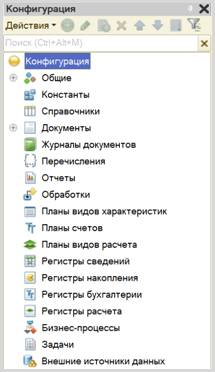
В окне
конфигурации находится дерево
конфигурации. Дерево состоит из различных объектов конфигурации. Каждый из
данных объектов выполняет определенную функцию, которые будут рассмотрены в
следующих лабораторных работах.
Если окно конфигурации было закрыто, то повторно открыть его можно, выбрав пункт меню «Конфигурация» à «Окно конфигурации».
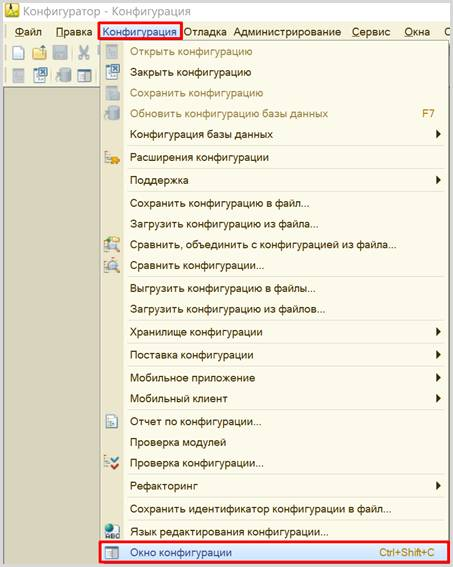
Существует несколько способов добавления/создания
нового объекта конфигурации. Рассмотрим на примере добавления нового справочника.
1. Щелкните по нужному объекту
конфигурации левой кнопкой мыши и нажмите клавишу «Insert».
2. Щелкните по нужному объекту
конфигурации правой кнопкой мыши и выберите пункт меню «Добавить».
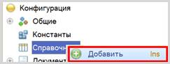
3. Щелкните по нужному объекту
конфигурации левой кнопкой мыши и нажмите на кнопку «Добавить».
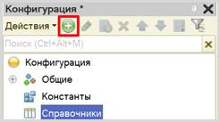
4. Щелкните по нужному объекту конфигурации левой кнопкой мыши и нажмите «Действия» à «Добавить».
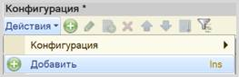
Все варианты приведут к одному результату:
созданию нового объекта конфигурации вида справочник.
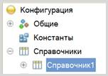
Удалить объект конфигурации можно также
несколькими способами:
1. Щелкните по выбранному объекту левой
кнопкой мыши и нажмите клавишу «Delete».
2. Щелкните по выбранному объекту правой
кнопкой мыши и в контекстном меню выберите пункт «Удалить».
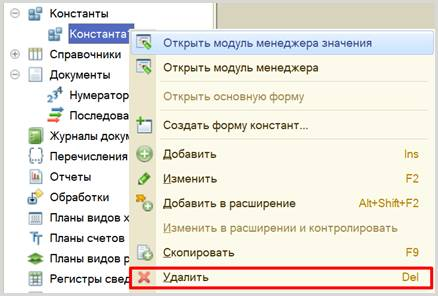
3. Щелкните по выбранному объекту левой
кнопкой мыши и нажмите кнопку «Удалить».
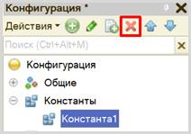
4. Щелкните по выбранному объекту левой кнопкой мыши, выберите в меню «Действия» à «Удалить».
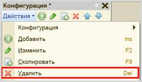
Любой из перечисленных методов даст
одинаковый результат: появится окно, в котором необходимо подтвердить удаление
объекта.
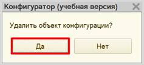
Если объект не связан ссылками с другими
объектами, то он будет удален.
Если же данный объект связан с другим
объектом с помощью ссылки, то появится окно с предупреждением о
том, что объект не может быть удален. Объект удалить не получится, пока
ссылочная связь не будет разорвана.
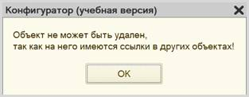
Редактирование объектов конфигурации может
производиться в окне редактирования
объекта конфигурации.
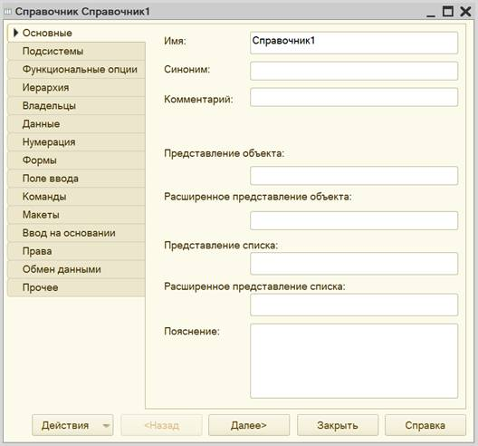
Для настроек того или иного объекта необходимо
переключаться между вкладками.
У любого
объекта конфигурации может быть открыта палитра
свойств. Для ее вызова нужно вызвать контекстное меню правой кнопкой
мыши и выбрать пункт «Свойства».
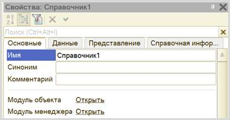
Настройки в окне редактирования объекта
конфигурации и в палитре свойств взаимосвязаны. Например, если изменить имя в
палитре свойств, то оно обязательно изменится в окне редактирования объекта
конфигурации.
У некоторых объектов (например, констант) нет
окна редактирования конфигурации. Все настройки осуществляются исключительно в
палитре свойств.
Палитра свойств может отображаться списком
или закладками. Чтобы изменить отображение элементов, нужно в пустом месте
палитры свойств щелкнуть правой кнопкой мыши и выбрать пункт «Списком» или «Закладками», в
зависимости от предпочтений.
|
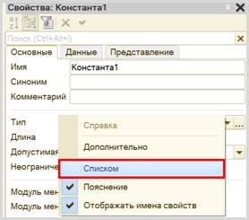 |
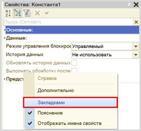 |
Каждый объект
конфигурации должен иметь имя, синоним и тип.
Определение
Имя – это идентификатор объекта в системе. Имя должно быть уникальным и записано по определенным правилам: имя должно состоять из одного слова (не иметь пробелов), начинаться с буквы и не содержать специальных символов, кроме «_».
Так, если мы хотим дать константе имя «Дата создания организации», то правильная запись будет выглядеть следующим образом:
q «ДатаСозданияОрганизации»;
q «Дата_создания_организации».
Если при написании имени
была допущена ошибка, то система выдаст сообщение об ошибке.
Определение
Синоним – удобное для пользователя название. В написании синонима нет никаких ограничений. Поле синонима заполняется автоматически после заполнения имени и может быть отредактировано.
Помимо имени
и синонима необходимо обратить
внимание на тип данных, который данная константа будет хранить. По
умолчанию тип всегда заполнен одним из допустимых значений. Например, константа
по умолчанию всегда имеет строковый тип с длиной 10 символов.
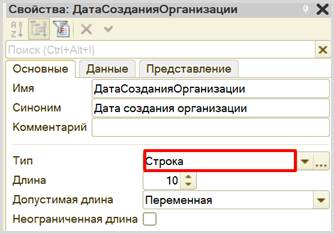
Тип данных может быть изменен. Для этого нужно нажать на «многоточие» и выбрать интересующий тип данных, поставив напротив него галочку.
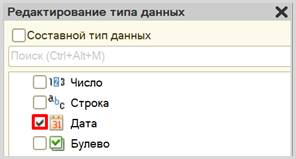
Для того чтобы обновить конфигурацию, нужно нажать на кнопку «Обновить конфигурацию базы данных» или использовать горячую клавишу «F7».
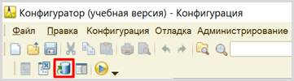
Появится окно, в котором необходимо
подтвердить, что вы согласны с внесением изменений в структуру конфигурации.
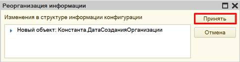
Для мгновенного запуска пользовательского режима выберите в меню «Сервис» à «1С:Предприятие».
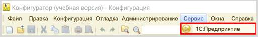
Если вы еще не
произвели обновление конфигурации, то система спросит, хотите ли вы обновить
конфигурацию.
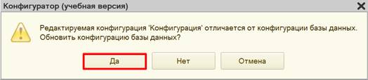
Затем появится окно реорганизации информации.
Начнется запуск
пользовательского режима.
Внимание!
Обязательно закрывайте пользовательский режим по
окончании работы с ним! При попытке обновить конфигурацию с открытым
пользовательским режимом появится сообщение об ошибке:
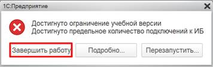
Попытку запустить режим «1С:Предприятие»
повторно система рассматривает как попытку подключения еще одного пользователя.
Но учебная версия платформы накладывает ограничение: с информационной базой
может работать только один пользователь, в связи с чем и возникает ошибка.
При необходимости информационная база может
быть выгружена в файл. Нужно сделать следующее:
1. Обновить конфигурацию.
2. Выбрать в меню «Администрирование» à «Выгрузить информационную базу…».
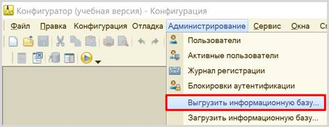
Затем выберите папку, в которую хотите
выгрузить свою информационную базу. При необходимости переименуйте файл.
Нажмите на кнопку «Сохранить». В указанном месте должен появиться файл с
расширением «dt».
Загрузка информационной базы происходит аналогично. Выберите в меню «Администрирование» à «Загрузить информационную базу».
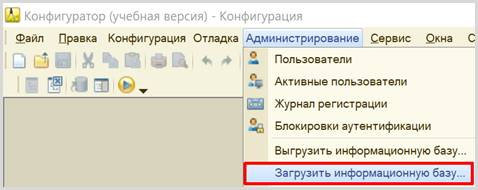
Выберите на своем
компьютере файл с разрешением «dt» и нажмите на кнопку «Открыть».
Внимание!
Все данные текущей информационной базы будут
удалены!